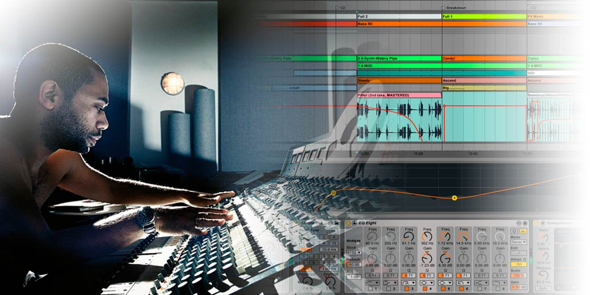
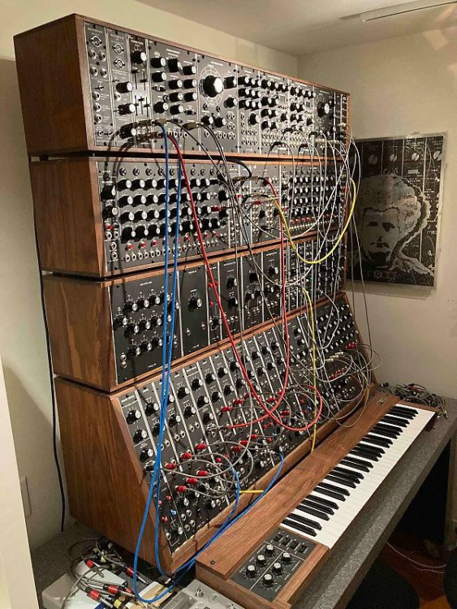

Introducción a la Producción Musical
📅 5 de Marzo, 2026
Descubre los fundamentos esenciales para comenzar tu viaje en la producción de música electrónica. Aprende sobre DAWs, equipamiento básico y los primeros pasos.
Leer más →Tu guía definitiva para la producción de música electrónica
Descubre técnicas, tips y secretos de los mejores productores

📅 5 de Marzo, 2026
Descubre los fundamentos esenciales para comenzar tu viaje en la producción de música electrónica. Aprende sobre DAWs, equipamiento básico y los primeros pasos.
Leer más →
📅 8 de Marzo, 2026
Explora el fascinante mundo de la síntesis sonora. Aprende sobre osciladores, filtros, envolventes y cómo crear tus propios sonidos únicos desde cero.
Leer más →
📅 10 de Marzo, 2026
Lleva tus producciones al siguiente nivel con técnicas avanzadas de mezcla y masterización. Descubre cómo hacer que tus tracks suenen profesionales.
Leer más →